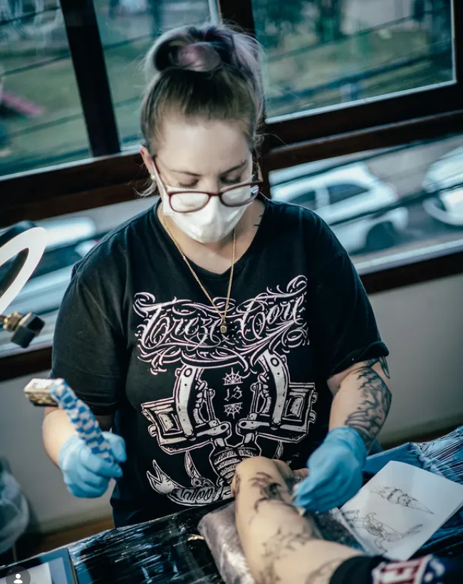

Artista Visual & Tatuadora
Évora
Rocha
📍 Canasvieiras, Florianópolis — SC
Com 7 anos de trabalho contínuo, Évora transita entre o delicado pincel de aquarela e a precisão da máquina de tattoo. Seu ateliê fica a poucos passos da praia de Canasvieiras, e essa energia do litoral respira em cada obra.
7+Anos criando
4Especialidades
∞Histórias
O que Évora faz
Aquarela
Retratos, florais e composições abstratas sobre papel algodão.
Tattoo
Tatuagens autorais do esboço à pele, pensadas junto com você.
Tinta Acrílica
Quadros de grande formato disponíveis para venda no ateliê.
Murais
Intervenções em escala urbana que transformam paredes em narrativas.
Retratos
Retratos personalizados — o presente que permanece para sempre.
Lembranças
Peças artesanais para levar um pouco do ateliê pra casa.